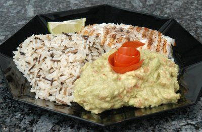

| Zutaten Für 4 Personen: | |
| 4 | Lachssteaks à ca. 240 g |
| 4 | Holzspiesse |
| Salz, Pfeffer aus der Mühle | |
| 4 | Limettenschnitze |
| Minze für die Garnitur | |
| SALSA | |
| 4 | feste Fleischtomaten |
| 1/2 | rote Zwiebel |
| 1 | Knoblauchzehe |
| 1 | grüne Peperoncino |
| 2 Zweige | Koriander |
| 1 Zweig | Pfefferminze |
| 2 | Avocado |
| 3 El | Limettensaft |
| Salz, Pfeffer aus der Mühle | |
Zubereitungszeit: ca. 20 Minuten
Für die Salsa die Tomaten mit dem Sparschäler rundum abschälen, entkernen und in feine Würfel schneiden. Abgeschälte Tomatenhaut zu einer Rose wickeln und beiseite stellen. Zwiebel, Knoblauch und Peperoncino nach Belieben entkernen, fein hacken. Koriander- und Pfefferminzblätter fein schneiden und mit Limettensaft beträufeln. Mit vorbereiteten Zutaten mischen, mit Salz und Pfeffer abschmecken.
Filetstränge der Lachssteaks nach innen legen und mit je einem Holzspiess fixieren. Mit Salz und Pfeffer würzen. Beidseitig je ca. 3-4 Minuten bei mittlerer Glut grillieren. Der Lachs ist gar, wenn sich die Rückengräte mit einer Gabel leicht lösen lässt.
Avocadosalsa auf Tellern anrichten. Lachssteaks daneben legen. Mit Tomatenrose, Minze und Limettenschnitz garnieren.
Dazu passen Baked Potatos oder frisches Baguette. Oder auch Wildreis.
Migros, Rezeptbroschüre
Pro Person ca. 52g Eiweiss, 49g Fett, 14g Kohlenhydrate, 2900 kJ, 700 kcal
Hat am 15.1.2008 sehr gut geschmeckt. Da es Winter ist habe ich es in der Grillpfanne zubereitet. Ausserdem waren die Lachstranchen gerade ausverkauft so wurde das halt mit Kabeljau zubereitet und fotografiert. RE